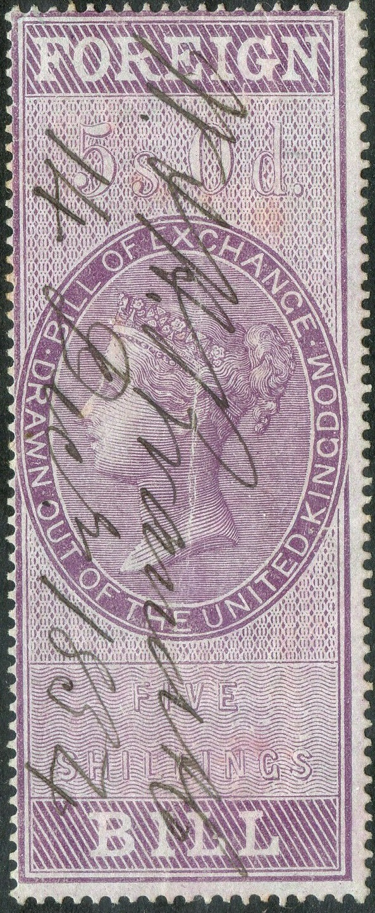
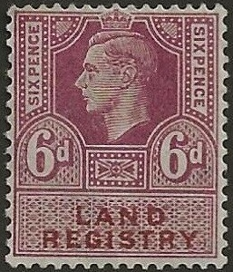
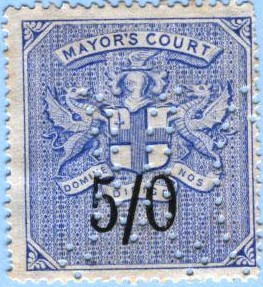
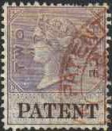
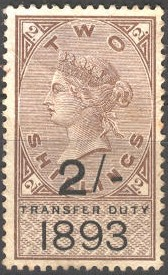
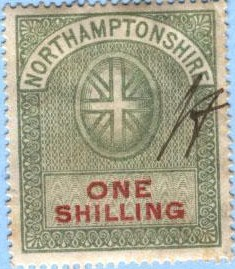
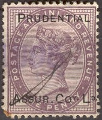

1854 and 1856 issue
Return To Catalogue - Great Britain - Great Britain Fiscal stamps, part 1
Note: on my website many of the
pictures can not be seen! They are of course present in the
catalogue;
contact me if you want to purchase it.
Many fiscal stamps were issued for Great Britain. I hereby give a list of the different purposes: admirality, bankruptcy court, board of agriculture, chancery court, civil service, common law courts, companies registration, consular service, contact note, copyhold, customs, district audit, foreign bill, hair powder, in chancery, judicature fees, land commission, land registry, life policy, match tax, matrimonial cuase fee, medicine labels, mixture for coffee, naturalization, patent, paymaster general's service, perfume duty, pedlars' certificate, police courts, probate courts, public records, sea policies, transfer duty, winding-up companies.
Great Britain Fiscal stamps, part 1
"FOREIGN BILL":
The first 'foreign bill' stamps appeared in 1854; 1 p, 2 p, 3 p, 4 p, 6 p, 8 p, 1 Sh, 1 Sh 4 p, 1 Sh 8 p, 2 Sh, 2 Sh 6 p, 3 Sh, 3 Sh 4 p, 4 Sh, 5 Sh, 6 Sh 8 p, 7 Sh 6 p, 10 Sh, 13 Sh 4 p, 15 Sh, 1 Pound, 1.10 Pounds, 2 Pounds and 2 1/2 Pounds, all in the colour lilac.
In 1856 a similar set was issued, but now with red letters (the main colour still lilac) in the values: 1 p, 2 p, 3 p, 4 p, 6 p, 8 p, 9 p, 1 Sh, 1 Sh 4 p, 1 Sh 8 p, 2 Sh, 2 Sh 6 p, 3 Sh, 4 Sh 4 p, 4 Sh, 5 Sh, 6 Sh 8 p, 7 Sh 6 p, 10 Sh, 13 Sh 4 p, 15 Sh, 1 Pound, 1.10 Pounds, 2 Pounds, 2.10 Pounds, 2.5 Pounds and 5 Pounds.

1854 and 1856 issue
In 1860 in the red crown design three stamps were issued (surcharged 'FOREIGN BILL' in brown): 2.10 Pounds, 5 Pounds and 10 Pounds.
In 1871 a new design was issued:
This design was issued in 1871
The following design with King Edward VII was issued in 1902:
I've seen the values: 4 Sh green and red, 5 Sh green and red. Larger design: 2.10 Pounds lilac and black.
With the image of King George V: 3 Sh green and red, 4 Sh green and red.
1901 onwards.
1 p lilac Draft stamp, overprinted 'INLAND REVENUE' in red

('INLAND REVENUE' 3 p lilac, Queen Victoria)
First issued in 1875.
1875 issue: all different designs in 1 p, 2 p, 4 p and 6 p (all
in lilac)
1875 issue, 10 Sh green.
(Reduced sizes)
(Justice Room, reduced sizes)
These Justice Room fiscal stamps were issued from 1869 to 1900.
"LAND COMMISSION"
1886: 6 values.
"LAND REGISTRATION" or "LAND REGISTRY"

King George V, 6 p lilac and Queen Elizabeth II; 15 p
blue and black
"LAW COURTS":
Law courts fiscal stamps were first issued in
1873, they have the face of Queen Victoria. There are several
designs with different heights. The following values exist: 1 p
lilac and brown, 1 p lilac and black (1878), 4 p lilac and lake
(1882), 6 p lilac and brown, 6 p lilac and green (1878), 1 Sh
green and red, 1 Sh green and black (1878), 2 Sh 6 p green and
red, 2 Sh 6 p green and brown, 5 Sh green and red, 5 Sh green and
violet (1878), 1 Pound lilac and green, 1 Pound lilac and black
(1878) and 5 Pounds lilac and green. In 1895 some surcharges were
issued: 6 p on 6 p lilac and green, 1 Sh on 1 Sh green and green,
2 Sh 6 p on 2 Sh 6 p green and green, 5 Sh on 5 Sh green and
green, 10 Sh on 10 Sh green and green, 1 Pound on 1 Pound lilac
and green and finally 5 Pounds on 5 Pounds lilac and green.
In 1903 law courts stamps with King Edward VII were issued in the
values: 1 p, 4 p, 6 p, 1 Sh, 2 Sh 6p, 5 Sh, 10 Sh, 1 Pound and 5
Pounds, all in the colours lilac and green. In 1921 law courts
stamps with King George V were issued (8 values, ranging from 1 p
to 5 Pounds).
(Reduced size)
A 1/2 p blue was prepared in 1871 according to the Forbin guide, but was not issued. Apparently forgeries exist of these stamps.
1858 in violet color: 6 p, 1 Sh, 2 Sh 6 p, 5 Sh, 10 Sh and 1
Pound. 1870 in blue color: 6 p, 1 Sh, 2 Sh 6 p, 5 Sh, 10 Sh and 1
Pound.

The 'Mayor's Court' fiscal stamps were issued in 1883, the value is surcharged in red (4 p and 6 p) or black (all other values). Of some values two types exist (second type issued in 1902).
"METROPOLITAN POLICE":
1907, two stamps with the image of King Edward VII: 2 Sh green and blue and 3 Sh green and blue.
"PATENT":

Blue labels with inscription 'PATENT' and picture of a crown,
issued in 1871
"POLICE COURTS":
1875 Seal type; exists with dates 3-2-75, 6-8-75 and 3-8-76
(image above)
In 1876 some stamps with the image of Queen Victoria were issued with "POLICE COURTS" inscription. The following values were issued: 1 Sh green and red, 2 Sh green and blue, 2 Sh 6 p green and brown, 5 Sh green and violet, 10 Sh green and red, 1 Pound green and orange. In 1895 it was re-issued, but with the value printed on the stamp as well: 6 p lilac and red, 1 Sh green and red (see image above), 2 Sh green and red, 2 Sh 6 p green and red, 5 Sh green and red, 10 Sh green and red.
In 1902 similar stamps with King Edward VII were issued.
"RECEIPT"
1853 Inscription 'RECEIPT'
A 1 p blue was issued. A slightly different type was issued in 1854 in blue or blue on blue.
"TRANSFER DUTY":

The 'Transfer Duty' fiscal stamps exist with inscription '1888', '1889', '1890', '1891', '1892' and '1893'. The issues of 1888 are green and black (3 p, 6 p, 1 Sh, 1 Sh 6 p, 2 Sh, 2 Sh 6 p, 5 Sh and 10 Sh). Those of 1889 are lilac and black (3 p, 6 p, 1 Sh, 1 Sh 6 p, 2 Sh, 2 Sh 6 p, 5 Sh and 10 Sh). Those of 1890 are orange and black (3 p, 6 p, 1 Sh, 1 Sh 6 p, 2 Sh, 2 Sh 6 p, 4 Sh, 5 Sh and 10 Sh). Those of 1891 areblueand black (3 p, 6 p, 1 Sh, 1 Sh 6 p, 2 Sh, 2 Sh 6 p, 4 Sh, 5 Sh and 10 Sh). Those of 1892 are bronze-green and black (3 p, 6 p, 1 Sh, 1 Sh 6 p, 2 Sh, 2 Sh 6 p, 4 Sh, 5 Sh and 10 Sh). Finally those of 1893 are brown and black (3 p, 6 p, 1 Sh, 1 Sh 6 p, 2 Sh, 2 Sh 6 p, 4 Sh, 5 Sh and 10 Sh). On May 12th these stamps were withdrawn from circulation.
(Post Office Permit 1/2 Ounce 1 d, blue)
(A crown with 'VR' below it in fancy letters)
(Reduced size)
(Reduced size)
(Inscription 'COM:SOUTHON FINE OR FEE STAMP', issued in
Southampton in 1880)

A stamp with inscription 'STAMP DUTY N.Z.' was issued for New Zealand.
Stamps overprinted by companies:

(Reduced size)
Fiscal stamps - Timbres fiscaux - Stempelmarken

{kind=link}
{kind=link}
{kind=link}